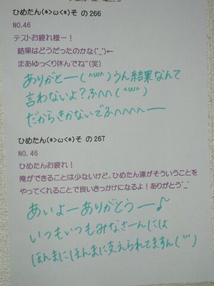
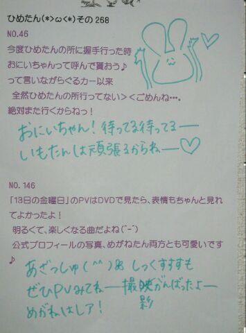

| 2013/05 30 Thu | ひめたん大図鑑50(2012年4 月) |
みなさんみにゃさーんっにゃー
明日はテスト最終日かーらーの
大阪公演初日ですよー
気持ちの切り替えそれな！
次回からきっとブログ復活だね( ^ω^ )
みんないっぱい遊びにくるんだよー
約束だぞー聞いてんのかおいこらーふへへ
えっとーそうですね
近況報告ゆーて、まあテストですよね。うん
あっちょっと素敵なお仕事にも
参加させていただきました(〃ω〃)
そんな感じでーすー伝わったかなー
生田様に最近なんかいじられる。
今度いつか ちまちまとお泊まりする。
お互いすっかり忘れてたけども
あしゅとお茶する。
よーし明日も頑張るぞー！
明日はテスト最終日かーらーの
大阪公演初日ですよー
気持ちの切り替えそれな！
次回からきっとブログ復活だね( ^ω^ )
みんないっぱい遊びにくるんだよー
約束だぞー聞いてんのかおいこらーふへへ
えっとーそうですね
近況報告ゆーて、まあテストですよね。うん
あっちょっと素敵なお仕事にも
参加させていただきました(〃ω〃)
そんな感じでーすー伝わったかなー
生田様に最近なんかいじられる。
今度いつか ちまちまとお泊まりする。
お互いすっかり忘れてたけども
あしゅとお茶する。
よーし明日も頑張るぞー！

1028
 最近はダブルピースが多いけどマイブーム?
最近はダブルピースが多いけどマイブーム?
v(・ω・)vにゃ
1029
今一番したいことは何ですか?(^o^)
AKBさんの「君のことが好きだから」のダンスを覚えたい!!
1030
プレゼントされていくらあっても困らないものってなに?
ちゅーっ(*/ω＼*)
はい真面目に答えた方がいいのかしら。いや真面目だが。
りぼんとか!
でもりぼん買うの、おとこのこは恥ずかしいかな。
1031
質問ってどこから選んでるの?前回の記事?それとも過去の記事?
前回の記事の緊急+過去の記事から順番に(^^)
1032
乃木坂46受けるとき、親に反対された??
反対するどころか応援してくれました(^^)＊
ただ、「お勉強も活動も頑張れるなら受けてみたら?」って言われたかな。
1033
挨拶の時とかのキャッチコピー作らないのかな??
んんん最初の頃はちょっと考えたりもしたんだけどね
('・ω・`)
なにかいいフレーズありますかー??
1034
剣道ってどう思う??
ひめたんのまわりで剣道してる人ってあんま聞かないんよねー。
ユニフォームかっこいいよね//掛け声もっ
んー応援する(^O^)♪
1035
化粧講座良かったらよろしくです←
1036
新しい美容院もう見つけた?それともメイクさんとかにしてもらうの?
いつもお世話になってるメイクさんにやっていただいてます!
1037
教師ってどう思う?
いいじゃんっ(*^^*)
ひめたん楽しかったクラスの先生のことは今でもずっと覚えてるよっ
素敵な先生になって下さい♪
1038
絶チルって、超能力のアレ?ひめたんはリアルタイムだったっけ...?
そっそ(ω)
ひめたんリアルタイムで見よったよ。当時小学6年生!
1039
「おしい!広島」のサイト見ました?
見たみた(^^)☆
おしいはおいしいんだお。うん!
いつかおいしい!広島県にならんかなー...
1040
早口言葉練習してますか?ww
半年前に部活引退してから全然やってない(∀)てへぺろ
おかげでら行がはっきり発音できなくなりつつあります...。
これ先輩にばれたらああごめんなさいっ
そして後輩にばれたら会わせる顔がないです。
あんなに怒ってきたのに☆☆
1041
ディズニーランドのお姉さんって、ダンサーみたいな人?スタッフみたいな人?
アトラクションのお姉さんもショップのお姉さんも楽しそう(o>ω<o)
そこにはあんまこだわってなかったなあ。
とにかく夢の国で働きたいのひめたん。
1042
塾とか行ってますか?
中学生の時は通ってましたよ(*^^*)
とっても素敵な塾でした。塾ってかあれは家!家族!
1043
広島のときは、アルパークとかよく行った?
アルパーク行ってましたよ!
スクール生時代に毎年イベントもしてたもん(^^)☆
あと東棟は、朝早くに並んでたまごっち買った思い出も。うん!
1044
焼き肉好きカナ?
好きすき(*/ω＼*)
1045
広島が恋しくなるのはどんなとき☆?
地元の友達とメールしてると「ああ帰りたい*\'`*」
ってなるー。
でも選抜入るまでは帰りませんきっぱり!
1046
てへぺろ←意味はわかんない。おしえて?
てへ + ぺろ =てへぺろ☆
1047
好きなTV番組教えてー(=^エ^=)
1048
朝のニュースとかは、何て番組を見てる?
ひめたんのテレビトーク◎
朝はめざましテレビで始まります。
夜はドラマはあんまチェックしてないかも('・ω・`)
バラエティは好きですよ!
乃木どこも好きだけど3回に1回は寝てたりする。え
でも録画してるから♪
1049
裁縫しないのか〜ボタンとか取れたら困るんぢゃないの?
1050
日芽香ちゃんならすぐに裁縫できるようになると思いますよ?裁縫覚えてみてはどうですか?
ボタン取れたらいつか付けてもらおうって思ってとっておく。
気づいたら無くなってる('・・`)
お裁縫はできるほうがいいんかなあ。お裁縫する気なくて地元にソーイングセット置いてきたんだけどなあ☆
またろてぃーと街散策したい！
明日から大阪
千秋楽までよろしくお願いします♪
気をつけてきてね！梅雨はいつからなのー


(＊´・ω・＊)
コメント(179)
2013/05/30 21:18